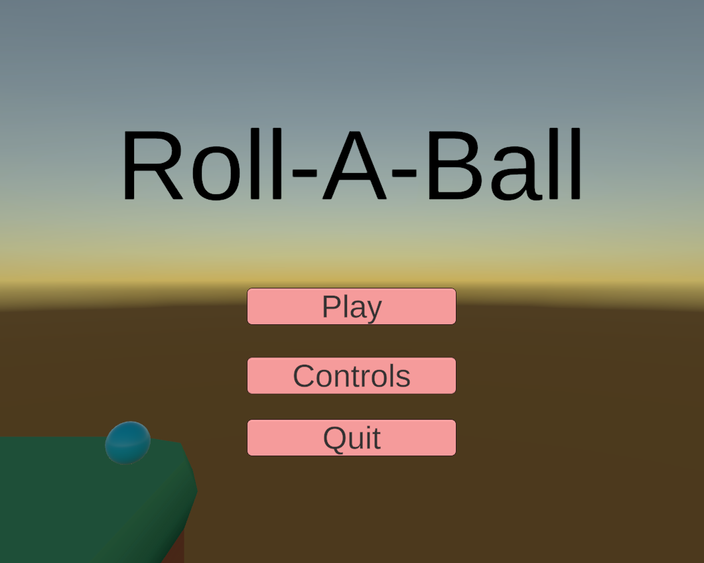
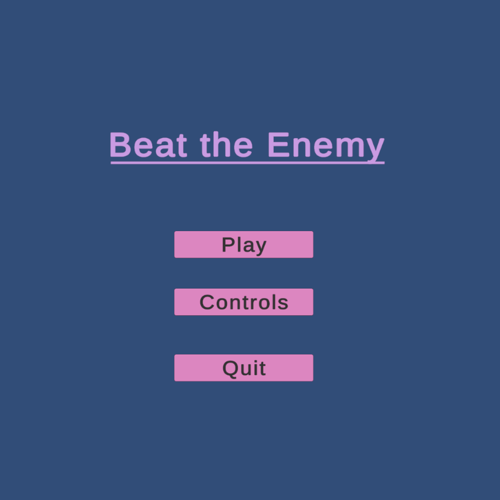
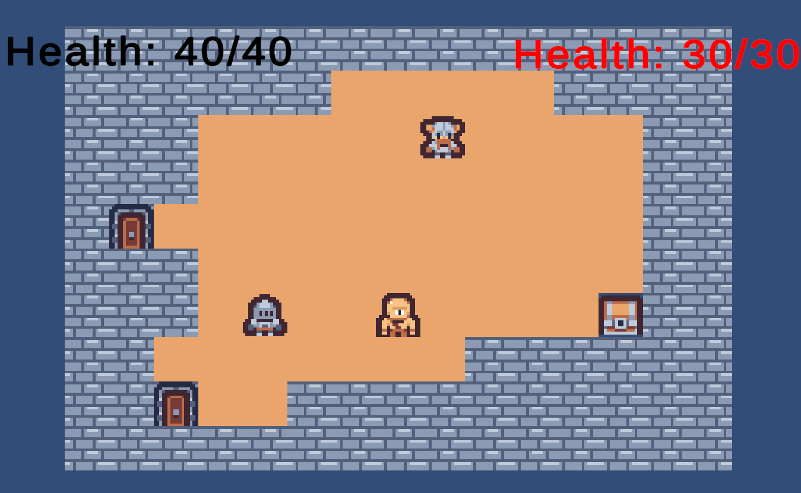
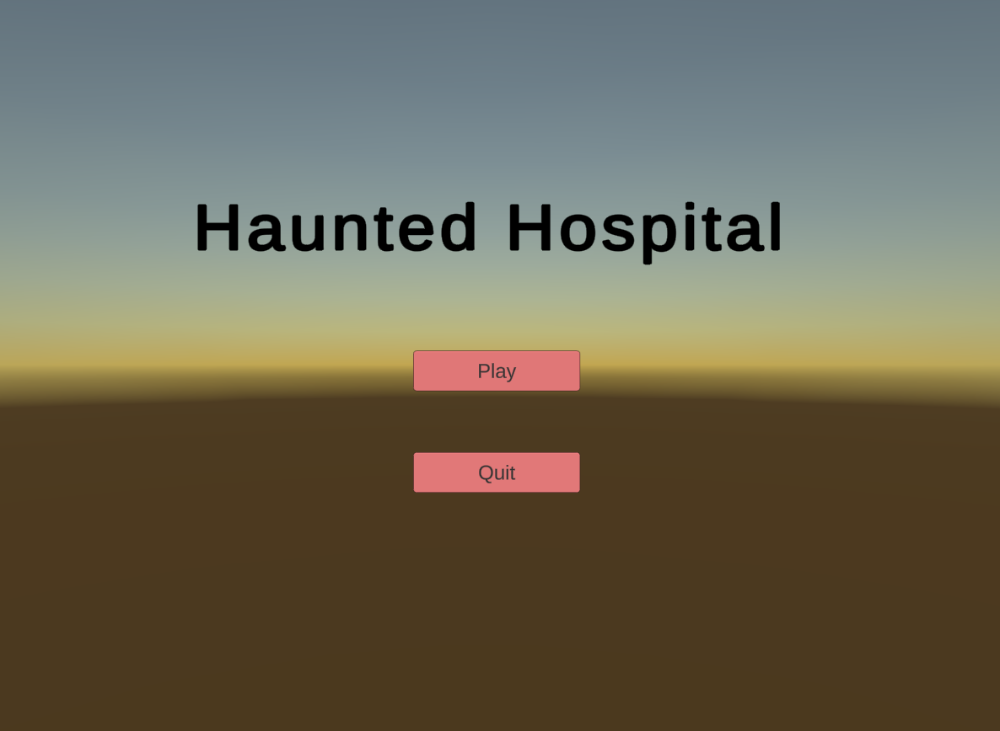
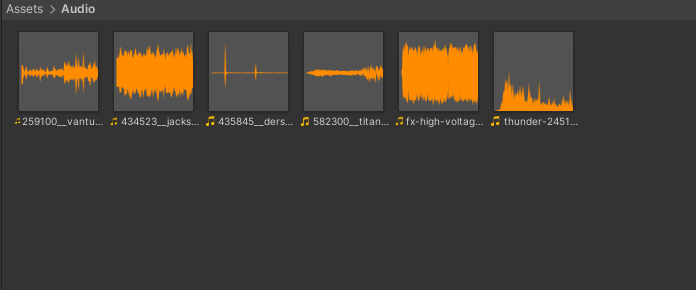

Roll-A-Ball
 Roll-A-Ball was one of the projects we worked on in class where we took Unity's tutorial and made it into our own game. My version ended up being a more casual hide and seek version of the game where you had to look around and find all the collectibles in each level. This wasn't my first time working on projects in sprints as I've done it before back at Dalhousie, however it's been a few years since I've actually done it so it was a bit of a challenge getting used to it again. One issue I ran into was just figuring out how to balance the game so it wasn't to hard for the player and that if felt good or fun to play. That's where the peer feedback really helped me out. Having peers check out my game and give me feedback helped me out a lot to fine tune the game so it felt like a good experience. As I'm the one making the game there's a lot of times where I'll miss something but peers would find that issue or bug or they'd just have advice to make things run smoother. Overall I'm quite happy with what I've built. I feel that I did fairly well for myself with it. In the future once I've learned more skills I'd like to go back to it and add more to the game and see how far I've come with my learning.


2D RPG
 The 2D-RPG tilemap game I made was probably the hardest thing I did this semester. This assignment was split into 2 parts with the first part consisting of us just making the map and having it generate itself or load a premade map, and then we had to add basic movement into it with the player character interacting with the tiles to move around. The second part of it had us integrating a health system from a previous assignment as well as adding enemies and basic combat into the game. The first part of this assignment wasn't to hard, figuring out the tile system and how to get tile's to generate wasn't to hard. Setting tiles to ones you could or couldn't walk on wasn't that bad either. Most of the challenge for this assignment came from the second part as there was a lot more to unpack with it. Since the game was supposed to be a turn-based game I wanted the players and enemies to take turns moving, I had a lot of trouble with that. Nothing I was trying seemed to work until I found 'TurnStates'. I was able to use that to set up a turn order where the player would move first and then the enemy would move. If it wasn't your turn in the order, you wouldn't be able to move. Another issue that I'm currently working on fixing is the option to play the game with Two players. It worked perfectly fine in the first part ofd the assignment when there was no turns or combat. I do have an idea of what direction I need to go with this to get the two player mode working again but I haven't been able to get it working yet. I'm going to keep at it though.




Haunted Hospital
 This project was also a 2 part assignment. In the first part we were given a pre-exisisting scene and asked to light it up and make it look spooky. For the second part we added timelines into the project to give it a bit more life. During the first part of the assignment I added the menu screen as well as a flashlight, a ghostly spirit moving around the scene and some floating objects, and spooky background music to set the atmosphere on both the menu screen and the main game scene. A challenge I did run into however was balancing the lighting so it wasn't to oversaturated or to dim in parts of the map. It's tough finding the right balance with all the settings in the lighting tab. It took some time and a bit of messing around with the lights but eventually I did get them the way I wanted. The second part of the challenge added timelines into the fray. For my timelines the first one was just some lighting sound effects and the flashlight flickering, the second one had several ceiling lights flickering with electric sound effects with the end having all the lights go out permanently. The last timeline was my favourite to work on as I had made the room it was in out to be haunted by several ghosts who would appear and disappear in the scene well several objects would fly around with some of the lights flickering as well. A challenge I ran into during the second part of this project was audio balancing. I have the same troubles with it as I do with balancing lighting. It's tough trying to find the perfect balance for the different audio tracks. When I had sound effects or small tracks go off during a timeline I wanted them to be loud enough that you could hear them, but not to loud that they would drown out the background audio, and vice versa. The solve for this was similiar to the earlier issue with lighting, I had to mess around with the sound settings until I found the right balance.


